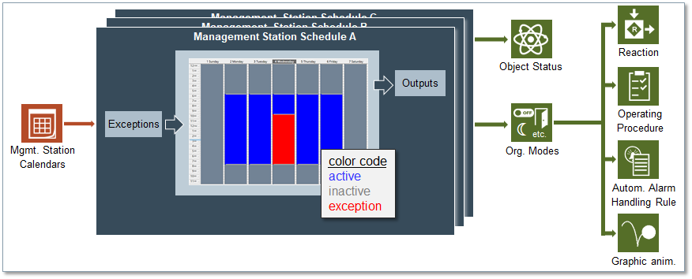

Scheduling

The Schedules component of the management platform enables you to:
- Set up schedules to automate the operation of the building control site: Schedules are defined on a weekly and daily basis. You can specify a different hourly timetable for each day of the week.
For example, you could schedule a heating system to work from 9 a.m. to 6 p.m. on Mondays and Fridays and from 8 a.m. to 8 p.m. on Tuesdays, Wednesdays, and Thursdays. - Set up exception calendars, which can be associated to schedules: Calendars define dates (or date ranges) during which a schedule does not apply.
For example, you could create a holiday calendar that overrides the regular heating schedule to reduce energy costs.
When you create a calendar, you can choose specific dates (January 15), a date range (August 1 – 31), or a week and a day you want the exception to run (third week of the month, on Wednesday).
Then you can associate one or more schedules with the calendar.
You can configure schedules and calendars to execute centrally, on the management platform as well as locally, directly on the BACnet field panel.
You can set up multiple schedules and exception calendars to run at the same time.
For validated points in BACnet schedule/Management Station schedule, following are the scenarios for the validation logs to be logged in Desigo CC, according to the validation profile (for example, monitored, enabled, supervised, and four eyes) defined for those points:
- While creating a BACnet schedule/Management Station schedule when a validated point is added.
- While deleting a BACnet schedule/Management Station schedule that contains a validated point.
- While adding/removing a validated point from an existing BACnet schedule/Management Station schedule.
- While performing Save As operation on an existing BACnet schedule/Management Station schedule that contains a validated point.
If multiple validated points are being scheduled, then the highest validation profile of the participating points is considered. The validation logs are then logged for each individual point, according to their respective validation profiles. This is also applicable if both the schedule and the points in it are validated. For any validated point, Action Details field displays the name of the schedule which performed changes on it.
This section provides background information on Schedules of Desigo CC. For related procedures, see the step-by-step section.